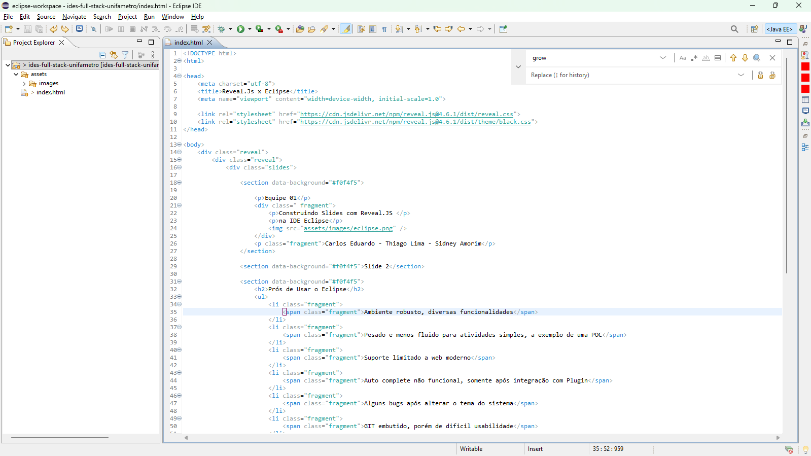
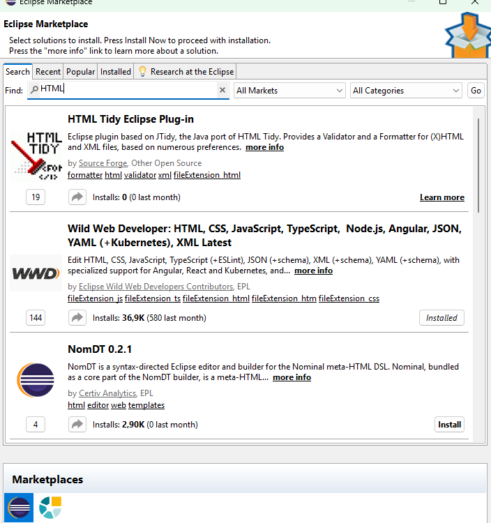
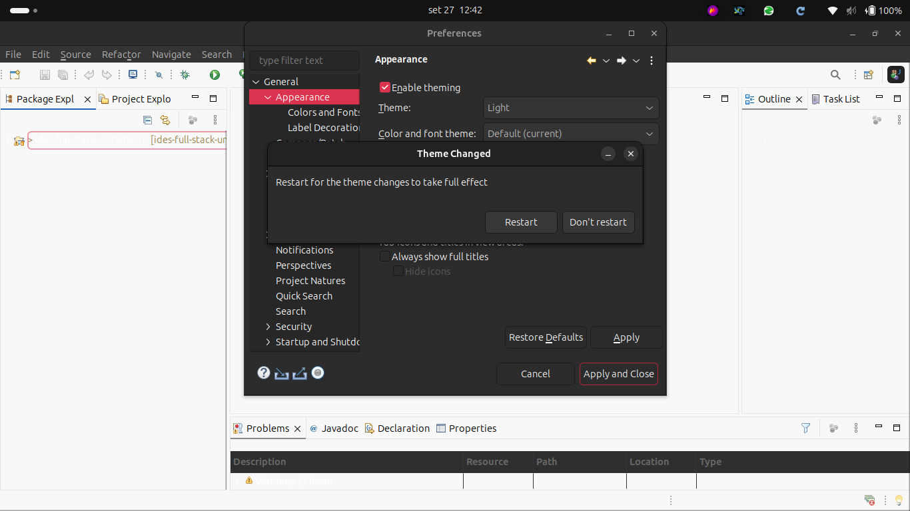
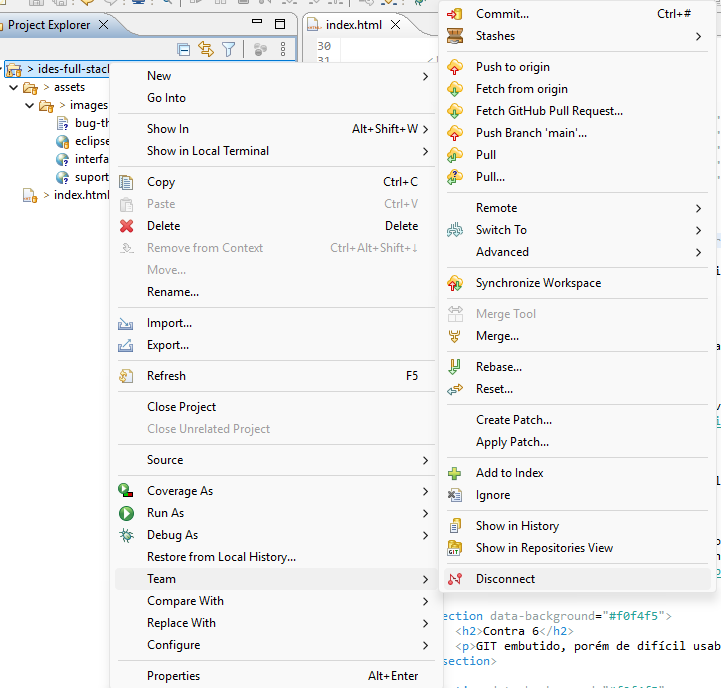
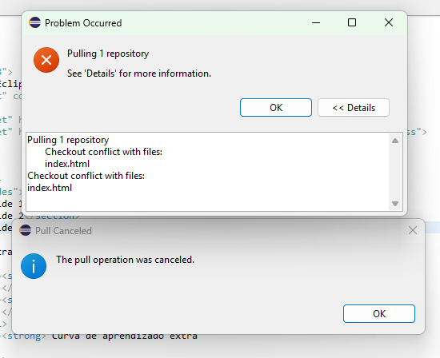
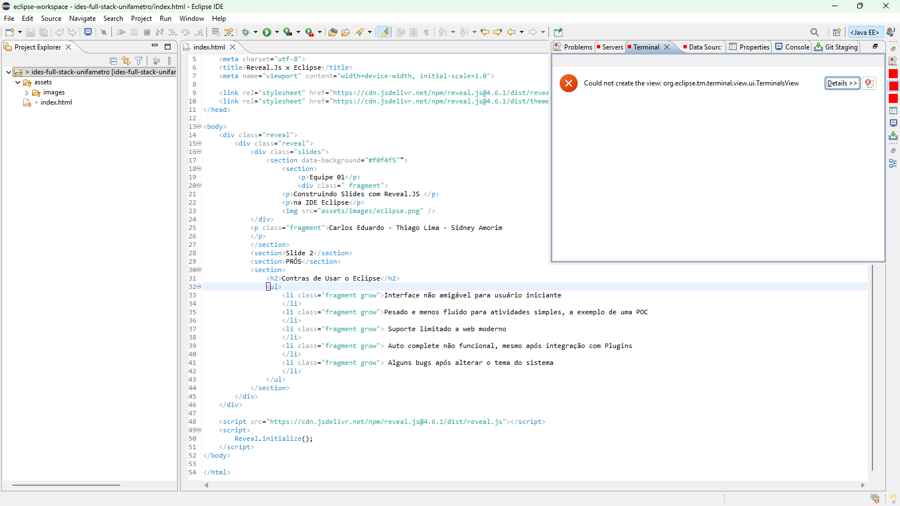
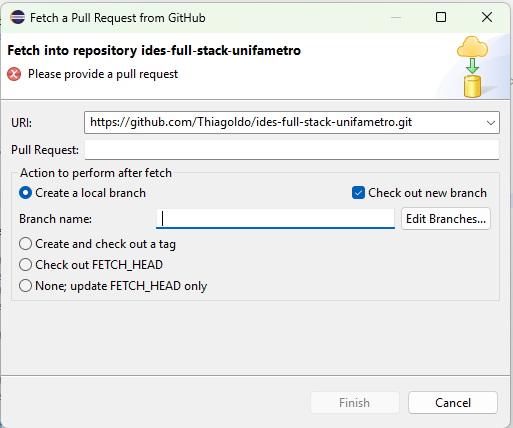

Construindo Slides com Reveal.JS
na IDE Eclipse
Carlos Eduardo - Thiago Lima - Sidney Amorim
<section data-background="#f0f4f5">
<h1>Equipe 01</h1>
<div class="fragment">
<p>Construindo Slides com Reveal.JS</p>
<p>na IDE Eclipse</p>
<img src="assets/images/eclipse.png" />
</div>
<p class="fragment">Carlos, Thiago e Sidney</p>
</section>


Ex.: Fechou o projeto automaticamente após realizar a troca do theme de DARK para Classic




